Partidos de CB El Palo
sábado 26 sep0 partidos
Forus Antonio PrietoGranada
sábado 3 oct0 partidos
Pabellón La MoscaMálaga
Pabellón Blas InfanteAlhaurín de la Torre
domingo 4 oct0 partidos
Pabellón La MoscaMálaga
Pabellón "Maestro Salvador Sánchez"Torre del Mar
sábado 10 oct1 partido
-
sáb 10 oct
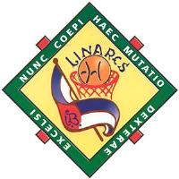
Linaqua CB Linares 72 – 80 CB El Palo N1 MasculinoN1 MASCJose Esteba Pabellón Julián JiménezLinares Liga N1 · Jornada 2· Jornada 2J2
Pabellón Julián JiménezLinares
domingo 11 oct3 partidos
-
dom 11 oct
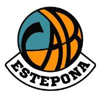
CAB Estepona – CB El Palo Cadete Masculino ACAD MASC AMiki Ayllón Pabellón José Antonio PinedaPista centralEstepona CadeteCAD · Campeonato · Jornada 1· Campeonato· Campeonato· Jornada 1J1 -
dom 11 oct
CB El Palo – Hispania Agustinos
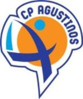
N1 FemeninoN1 FEMLuismi Montiel Pabellón La MoscaPista central Liga N1 · Jornada 16· Jornada 16J16 - dom 11 oct EBG Málaga 09/10 – CB El Palo Junior MasculinoJUN MASCEnrique López Pabellón José Mª Martín UrbanoPista BMálaga JuniorJUN · Campeonato · Jornada 2· Campeonato· Campeonato· Jornada 2J2
Pabellón La MoscaMálaga
Pabellón José Antonio PinedaEstepona
Pabellón José Mª Martín UrbanoMálaga
sábado 17 oct0 partidos
Pabellón La MoscaMálaga
CEIP Ramón del Valle InclánMálaga
Colegio Los OlivosMálaga
Colegio San Juan de Dios GoletaMálaga
Pabellón Antonio HenaresÁlora
Pabellón JuanitoFuengirola
Pabellón Training Center HiguerónFuengirola
Pistas Pepe Román (Girón) - CB Ciudad de MelillaMálaga
Polideportivo Ramón Rico Benalmádena PuebloBenalmádena
domingo 18 oct0 partidos
CEIP Ramón del Valle InclánMálaga
Pabellón 15 de julioAntequera
Pabellón José Antonio PinedaEstepona
lunes 19 oct0 partidos
IES Litoral (PABELLÓN)Málaga
viernes 23 oct0 partidos
Pabellón Colegio Ntra.Sra.de Lourdes de CoínCoín
sábado 24 oct0 partidos
Pabellón La MoscaMálaga
CEIP Ramón del Valle InclánMálaga
CEIP Félix Revello de Toro (Teatinos)Málaga
CEIP Gregorio MarañónRincón de la Victoria
Ciudad Deportiva CártamaCártama
Ciudad deportiva Regino Hernández de Las LagunasMijas
IES Emilio PradosMálaga
IES Litoral (PABELLÓN)Málaga
Parque Victoria Fitness CenterRincón de la Victoria
domingo 25 oct0 partidos
Pabellón La MoscaMálaga
Colegio El PinarAlhaurín de la Torre
Colegio GamarraMálaga
Colegio Los OlivosMálaga
Pabellón Bello Horizonte - Carlos CabezasMarbella
Pabellón Blas InfanteAlhaurín de la Torre
Pabellón José Mª Martín UrbanoMálaga
miércoles 28 oct0 partidos
Pabellón José Mª Martín UrbanoMálaga
sábado 31 oct0 partidos
Pabellón La MoscaMálaga
CEIP Ramón del Valle InclánMálaga
CEIP Luis BuñuelMálaga
Ciudad Deportiva CártamaCártama
IES Emilio PradosMálaga
Pabellón José Antonio PinedaEstepona
domingo 1 nov0 partidos
Colegio El PinarAlhaurín de la Torre
miércoles 4 nov0 partidos
Colegio Novaschool Añoreta (Pabellón)Rincón de la Victoria
viernes 6 nov0 partidos
CEIP El MorcheTorrox
sábado 7 nov0 partidos
Pabellón La MoscaMálaga
CEIP Ramón del Valle InclánMálaga
Colegio Los OlivosMálaga
Colegio San José (PABELLÓN)Málaga
IES Emilio PradosMálaga
Pabellón Bello Horizonte - Carlos CabezasMarbella
Pabellón VeletaGranada
Pistas Pepe Román (Girón) - CB Ciudad de MelillaMálaga
domingo 8 nov0 partidos
Pabellón La MoscaMálaga
CEIP Ramón del Valle InclánMálaga
Colegio Christian AndersenMálaga
IES Jardines de Puerta OscuraMálaga
Pabellón "Maestro Salvador Sánchez"Torre del Mar
Pabellón Bello Horizonte - Carlos CabezasMarbella
Pabellón José Mª Martín UrbanoMálaga
Pabellón Municipal de NerjaNerja
Pabellón Rubén RuzafaRincón de la Victoria
jueves 12 nov0 partidos
CEIP Ramón del Valle InclánMálaga
sábado 14 nov0 partidos
Pabellón La MoscaMálaga
CEIP Ramón del Valle InclánMálaga
CEIP Tierno GalvánMálaga
Colegio Los OlivosMálaga
IES Emilio PradosMálaga
Pabellón "Maestro Salvador Sánchez"Torre del Mar
Pabellón José Mª Martín UrbanoMálaga
Pabellón JuanitoFuengirola
Pabellón Municipal CampillosCampillos
Palacio San MiguelTorremolinos
Polideportivo Ramón Rico Benalmádena PuebloBenalmádena
domingo 15 nov0 partidos
Pabellón La MoscaMálaga
CEIP Ramón del Valle InclánMálaga
Ciudad Deportiva Javier Imbroda (Carranque)Málaga
Ciudad deportiva Regino Hernández de Las LagunasMijas
Colegio San José (PABELLÓN)Málaga
Pabellón Blas InfanteAlhaurín de la Torre
Pabellón Cubierto "La Lobilla"Estepona
viernes 20 nov0 partidos
Colegio GamarraMálaga
sábado 21 nov0 partidos
Pabellón La MoscaMálaga
CEIP Ramón del Valle InclánMálaga
CEIP Tierno GalvánMálaga
Colegio San José (PABELLÓN)Málaga
IES Sierra BermejaMálaga
domingo 22 nov0 partidos
Pabellón La MoscaMálaga
CEIP Gregorio MarañónRincón de la Victoria
Colegio El PinarAlhaurín de la Torre
IES Jardines de Puerta OscuraMálaga
Pabellón "Maestro Salvador Sánchez"Torre del Mar
Pabellón José Antonio PinedaEstepona
Pabellón Paquillo FernándezGranada
Pabellón Rubén RuzafaRincón de la Victoria
viernes 27 nov0 partidos
Anexo Polideportivo Municipal CoínCoín
sábado 28 nov0 partidos
Pabellón La MoscaMálaga
CEIP Ramón del Valle InclánMálaga
Ciudad Deportiva Javier Imbroda (Carranque)Málaga
Colegio SalliverFuengirola
Complejo Polideportivo Alcalá La RealAlcalá la Real
Pabellón Rubén RuzafaRincón de la Victoria
Palacio San MiguelTorremolinos
Polideportivo Municipal Alhaurín el GrandeAlhaurín el Grande
domingo 29 nov0 partidos
Pabellón La MoscaMálaga
Colegio Novaschool Añoreta (Pabellón)Rincón de la Victoria
Pabellón José Mª Martín UrbanoMálaga
Polideportivo Ramón Rico Benalmádena PuebloBenalmádena
martes 1 dic0 partidos
Pabellón Blas InfanteAlhaurín de la Torre
sábado 5 dic0 partidos
Pabellón La MoscaMálaga
Colegio Novaschool Añoreta (Pabellón)Rincón de la Victoria
sábado 12 dic0 partidos
Pabellón La MoscaMálaga
CEIP Ramón del Valle InclánMálaga
Colegio Novaschool Añoreta (Pabellón)Rincón de la Victoria
Colegio HH MaristasMálaga
Colegio San José (PABELLÓN)Málaga
Pabellón Blas InfanteAlhaurín de la Torre
Pabellón del ToyoEl Toyo
Polideportivo Municipal ElolaFuengirola
domingo 13 dic0 partidos
Pabellón La MoscaMálaga
Ciudad Deportiva Javier Imbroda (Carranque)Málaga
Pabellón Rubén RuzafaRincón de la Victoria
Pabellón Sergio ScarioloSan Pedro de Alcántara
sábado 19 dic0 partidos
Pabellón La MoscaMálaga
CEIP Ramón del Valle InclánMálaga
Ciudad Deportiva Javier Imbroda (Carranque)Málaga
domingo 20 dic0 partidos
Pabellón La MoscaMálaga
sábado 9 ene0 partidos
Pabellón La MoscaMálaga
Colegio Novaschool Añoreta (Pabellón)Rincón de la Victoria
Pabellón José Mª Martín UrbanoMálaga
domingo 10 ene0 partidos
Pabellón Rubén RuzafaRincón de la Victoria
sábado 16 ene0 partidos
Pabellón La MoscaMálaga
Ciudad deportiva Regino Hernández de Las LagunasMijas
Colegio San Juan de Dios GoletaMálaga
Pabellón Carlos Martínez EstebanJaén
Pabellón Municipal La MojoneraLa Mojonera
Pabellón Training Center HiguerónFuengirola
domingo 17 ene0 partidos
Pabellón La MoscaMálaga
Pabellón Rubén RuzafaRincón de la Victoria
Palacio San MiguelTorremolinos
sábado 23 ene0 partidos
Pabellón La MoscaMálaga
CEIP Ramón del Valle InclánMálaga
Ciudad deportiva Regino Hernández de Las LagunasMijas
Colegio San José (PABELLÓN)Málaga
domingo 24 ene0 partidos
Colegio Novaschool Añoreta (Pabellón)Rincón de la Victoria
Ciudad Deportiva Javier Imbroda (Carranque)Málaga
Colegio AgustinosGranada
viernes 29 ene0 partidos
Colegio GamarraMálaga
sábado 30 ene0 partidos
Pabellón La MoscaMálaga
Pabellón JuanitoFuengirola
domingo 31 ene0 partidos
Pabellón La MoscaMálaga
Pabellón José Antonio PinedaEstepona
Palacio San MiguelTorremolinos
sábado 6 feb0 partidos
Pabellón La MoscaMálaga
CEIP Ramón del Valle InclánMálaga
Pabellón José Mª Martín UrbanoMálaga
domingo 7 feb0 partidos
Colegio Novaschool Añoreta (Pabellón)Rincón de la Victoria
IES Litoral (PABELLÓN)Málaga
IES Sierra BermejaMálaga
sábado 13 feb0 partidos
Pabellón La MoscaMálaga
CEIP Ramón del Valle InclánMálaga
IES Litoral (PABELLÓN)Málaga
Pabellón Carlos Martínez EstebanJaén
Pabellón Rubén RuzafaRincón de la Victoria
domingo 14 feb0 partidos
Pabellón La MoscaMálaga
Ciudad Deportiva Javier Imbroda (Carranque)Málaga
sábado 20 feb0 partidos
Pabellón La MoscaMálaga
CEIP Félix Revello de Toro (Teatinos)Málaga
domingo 21 feb0 partidos
Pabellón La MoscaMálaga
sábado 6 mar0 partidos
CEIP Ramón del Valle InclánMálaga
Pabellón Bello Horizonte - Carlos CabezasMarbella
Pabellón Mun José L. Fernández MenaAndújar
domingo 7 mar0 partidos
Colegio Los OlivosMálaga
IES Sierra BermejaMálaga
Pabellón Guillermo García Pezzi-MelillaMelilla
Pabellón Rubén RuzafaRincón de la Victoria
sábado 13 mar0 partidos
Pabellón La MoscaMálaga
domingo 14 mar0 partidos
Pabellón La MoscaMálaga
sábado 20 mar0 partidos
Pabellón Blas InfanteAlhaurín de la Torre
domingo 21 mar0 partidos
Pabellón José Antonio PinedaEstepona
jueves 1 abr0 partidos
Pabellón La MoscaMálaga
sábado 3 abr0 partidos
Pabellón La MoscaMálaga
Complejo Deportivo Universidad de Málaga (Teatinos)Málaga
Pabellón Bello Horizonte - Carlos CabezasMarbella
domingo 4 abr0 partidos
Colegio San José (PABELLÓN)Málaga
Pabellón José Mª Martín UrbanoMálaga
sábado 10 abr0 partidos
Pabellón La MoscaMálaga
domingo 11 abr0 partidos
Pabellón La MoscaMálaga
IES Litoral (PABELLÓN)Málaga
Pabellón José Mª Martín UrbanoMálaga
sábado 17 abr0 partidos
Complejo Deportivo Universidad de Málaga (Teatinos)Málaga
domingo 18 abr0 partidos
Ciudad Deportiva Javier Imbroda (Carranque)Málaga
Pabellón Infanta CristinaRoquetas de Mar
Pabellón La MoscaMálaga
CEIP Ramón del Valle InclánMálaga
Colegio Novaschool Añoreta (Pabellón)Rincón de la Victoria
Anexo Polideportivo Municipal CoínCoín
CEIP El MorcheTorrox
CEIP Félix Revello de Toro (Teatinos)Málaga
CEIP Gregorio MarañónRincón de la Victoria
CEIP Luis BuñuelMálaga
CEIP Tierno GalvánMálaga
Ciudad Deportiva CártamaCártama
Ciudad Deportiva Javier Imbroda (Carranque)Málaga
Ciudad deportiva Regino Hernández de Las LagunasMijas
Colegio AgustinosGranada
Colegio Christian AndersenMálaga
Colegio El PinarAlhaurín de la Torre
Colegio GamarraMálaga
Colegio HH MaristasMálaga
Colegio Los OlivosMálaga
Colegio SalliverFuengirola
Colegio San José (PABELLÓN)Málaga
Colegio San Juan de Dios GoletaMálaga
Complejo Deportivo Universidad de Málaga (Teatinos)Málaga
Complejo Polideportivo Alcalá La RealAlcalá la Real
Forus Antonio PrietoGranada
IES Emilio PradosMálaga
IES Jardines de Puerta OscuraMálaga
IES Litoral (PABELLÓN)Málaga
IES Sierra BermejaMálaga
Pabellón "Maestro Salvador Sánchez"Torre del Mar
Pabellón 15 de julioAntequera
Pabellón Antonio HenaresÁlora
Pabellón Bello Horizonte - Carlos CabezasMarbella
Pabellón Blas InfanteAlhaurín de la Torre
Pabellón Carlos Martínez EstebanJaén
Pabellón Colegio Ntra.Sra.de Lourdes de CoínCoín
Pabellón Cubierto "La Lobilla"Estepona
Pabellón del ToyoEl Toyo
Pabellón Guillermo García Pezzi-MelillaMelilla
Pabellón Infanta CristinaRoquetas de Mar
Pabellón José Antonio PinedaEstepona
Pabellón José Mª Martín UrbanoMálaga
Pabellón JuanitoFuengirola
Pabellón Julián JiménezLinares
Pabellón Mun José L. Fernández MenaAndújar
Pabellón Municipal CampillosCampillos
Pabellón Municipal de NerjaNerja
Pabellón Municipal La MojoneraLa Mojonera
Pabellón Paquillo FernándezGranada
Pabellón Rubén RuzafaRincón de la Victoria
Pabellón Sergio ScarioloSan Pedro de Alcántara
Pabellón Training Center HiguerónFuengirola
Pabellón VeletaGranada
Palacio San MiguelTorremolinos
Parque Victoria Fitness CenterRincón de la Victoria
Pistas Pepe Román (Girón) - CB Ciudad de MelillaMálaga
Polideportivo Municipal Alhaurín el GrandeAlhaurín el Grande
Polideportivo Municipal ElolaFuengirola
Polideportivo Ramón Rico Benalmádena PuebloBenalmádena
No hay partidos del club en estas fechas.
- sáb 26 sep El Plantel GMASB 71 – 52 CB El Palo N1 FemeninoN1 FEMLuismi Montiel Forus Antonio PrietoGranada Liga N1 · Jornada 1· Jornada 1J1
- sáb 3 oct CB El Palo 67 – 36 CB Ciudad de Melilla Junior Masculino 09-10JUN MASC 09-10Luis Diego Pabellón La MoscaPista 1 JuniorJUN · Fase Previa · Jornada 1· Fase Previa· Fase Previa· Jornada 1J1
-
sáb 3 oct
CB El Palo 48 – 23 CP Mijas
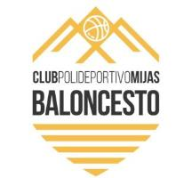
Sub22 FemeninoSub22 FEMAntoñipi Sánchez Pabellón La MoscaPista 3 Senior Provincial FemeninoSEN PROV FEM · Jornada 1· Jornada 1J1 -
sáb 3 oct
CB El Palo 65 – 71 CB Novaschool
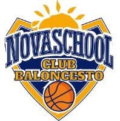
Junior MasculinoJUN MASCEnrique López Pabellón La MoscaPista 3 JuniorJUN · Campeonato · Jornada 1· Campeonato· Campeonato· Jornada 1J1 -
sáb 3 oct
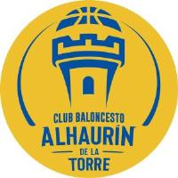
CB Alhaurín de la Torre 47 – 52 CB El Palo Provincial FemeninoPROV FEMSergio Risoto Pabellón Blas InfantePista centralAlhaurín de la Torre Senior Provincial FemeninoSEN PROV FEM · Jornada 1· Jornada 1J1 -
sáb 3 oct
CB El Palo 74 – 16 Rincón Basket Club
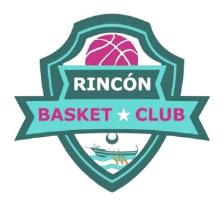
Sub22 MasculinoSub22 MASCAntonio Navajas Pabellón La MoscaPista 3 Senior U22 MasculinoSEN U22 MASC · Jornada 1· Jornada 1J1 -
sáb 3 oct
CB El Palo 89 – 58 Caja Rural Jaén
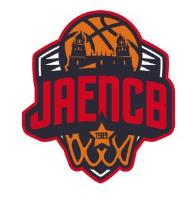
N1 MasculinoN1 MASCJose Esteba Pabellón La Mosca Liga N1 · Jornada 1· Jornada 1J1 - sáb 3 oct CB El Palo 57 – 63 CB La Mojonera N1 FemeninoN1 FEMLuismi Montiel Pabellón La Mosca Liga N1 · Jornada 2· Jornada 2J2
- dom 4 oct CB El Palo 68 – 48 "Juntas" Torrebasket Junior FemeninoJUN FEMAle García Pabellón La MoscaPista 3 JuniorJUN · Campeonato · Jornada 1· Campeonato· Campeonato· Jornada 1J1
- dom 4 oct Torrebasket 59 – 63 CB El Palo Provincial Masculino APROV MASC AEnrique López Pabellón "Maestro Salvador Sánchez"Torre del Mar Senior Provincial MasculinoSEN PROV MASC · Jornada 1· Jornada 1J1
- sáb 17 oct CB El Palo – CB Ciudad de Melilla Junior Femenino 09-10JUN FEM 09-10Antonio Sánchez Pabellón La MoscaPista 3 JuniorJUN · Fase Previa · Jornada 2· Fase Previa· Fase Previa· Jornada 2J2
-
sáb 17 oct
CB El Palo – CB San Pedro Rojo
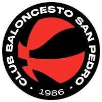
Cadete Masculino 12 BCAD MASC 12 BCarlos Moncada Pabellón La MoscaPista 3 Cadete 1er AñoCAD 1er Año · Fase Previa · Jornada 1· Fase Previa· Fase Previa· Jornada 1J1 -
sáb 17 oct
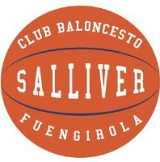
CB Salliver – CB El Palo Infantil Masculino 13INF MASC 13Quivila Pabellón JuanitoPista 1Fuengirola InfantilINF · Campeonato · Jornada 1· Campeonato· Campeonato· Jornada 1J1 - sáb 17 oct CB El Palo – Torre Basket Club Infantil Masculino 13-14INF MASC 13-14Ale Caser CEIP Ramón del Valle Inclán InfantilINF · Fase Previa · Jornada 1· Fase Previa· Fase Previa· Jornada 1J1
-
sáb 17 oct
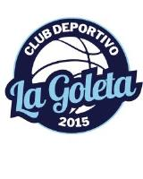
CD La Goleta – CB El Palo Infantil Masculino 13 BINF MASC 13 BDani Garrido Colegio San Juan de Dios GoletaMálaga InfantilINF · Fase Previa · Jornada 1· Fase Previa· Fase Previa· Jornada 1J1 -
sáb 17 oct
CB El Palo – CB Benalmádena
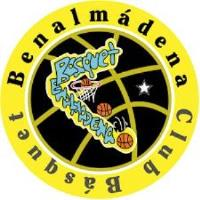
Infantil Femenino 14INF FEM 14Rubén Rus CEIP Ramón del Valle Inclán InfantilINF · Fase Previa · Jornada 1· Fase Previa· Fase Previa· Jornada 1J1 - sáb 17 oct CB El Palo – CB San Pedro Infantil Femenino 13-14INF FEM 13-14Rubén Pérez CEIP Ramón del Valle Inclán InfantilINF · Fase Previa · Jornada 1· Fase Previa· Fase Previa· Jornada 1J1
- sáb 17 oct CB Salliver – CB El Palo Junior Masculino 09-10JUN MASC 09-10Luis Diego Pabellón JuanitoPista 2Fuengirola JuniorJUN · Fase Previa · Jornada 2· Fase Previa· Fase Previa· Jornada 2J2
- sáb 17 oct CB Salliver – CB El Palo Junior FemeninoJUN FEMAle García Pabellón Training Center HiguerónFuengirola JuniorJUN · Campeonato · Jornada 2· Campeonato· Campeonato· Jornada 2J2
- sáb 17 oct CB El Palo – CD La Goleta Infantil Femenino 13INF FEM 13Luismi Montiel CEIP Ramón del Valle Inclán InfantilINF · Campeonato · Jornada 1· Campeonato· Campeonato· Jornada 1J1
-
sáb 17 oct
CB El Palo – CD Estudiantes
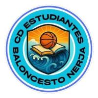
Infantil Femenino 13 BINF FEM 13 BÁlvaro González CEIP Ramón del Valle Inclán InfantilINF · Fase Previa · Jornada 1· Fase Previa· Fase Previa· Jornada 1J1 -
sáb 17 oct
CB El Palo – CB Algazara
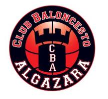
Infantil Masculino 14 BINF MASC 14 BAlberto Gam CEIP Ramón del Valle Inclán Infantil 1er AñoINF 1er Año · Fase Previa · Jornada 1· Fase Previa· Fase Previa· Jornada 1J1 -
sáb 17 oct
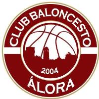
CB Álora – CB El Palo Cadete Masculino 12CAD MASC 12Cris Bazalo Pabellón Antonio HenaresÁlora CadeteCAD · Fase Previa · Jornada 1· Fase Previa· Fase Previa· Jornada 1J1 - sáb 17 oct CB Ciudad de Melilla – CB El Palo Cadete Femenino 11-12CAD FEM 11-12Rubén Rus Pistas Pepe Román (Girón) - CB Ciudad de MelillaMálaga CadeteCAD · Fase Previa · Jornada 1· Fase Previa· Fase Previa· Jornada 1J1
- sáb 17 oct CB El PaloSergio Risoto – CB El PaloAntoñipi Sánchez Provincial FemeninoPROV FEMSub22 FemeninoSub22 FEM Pabellón La MoscaPista 1 Senior Provincial FemeninoSEN PROV FEM · Jornada 2· Jornada 2J2
- sáb 17 oct CB El PaloEnrique López – CB El PaloJuan Vasco Provincial Masculino APROV MASC AProvincial Masculino BPROV MASC B Pabellón La MoscaPista 1 Senior Provincial MasculinoSEN PROV MASC · Jornada 2· Jornada 2J2
- sáb 17 oct CB Benalmádena – CB El Palo Cadete Femenino 12CAD FEM 12María Leal Polideportivo Ramón Rico Benalmádena PuebloPista centralBenalmádena CadeteCAD · Fase Previa · Jornada 1· Fase Previa· Fase Previa· Jornada 1J1
-
sáb 17 oct
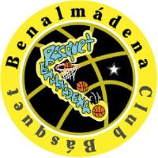
CB Benalmádena´12 – CB El Palo Infantil Masculino 13INF MASC 13Quivila Polideportivo Ramón Rico Benalmádena PuebloPista centralBenalmádena Cadete 1er AñoCAD 1er Año · Fase Previa · Jornada 1· Fase Previa· Fase Previa· Jornada 1J1 -
sáb 17 oct
CB El Palo – CB Salliver Fuengirola
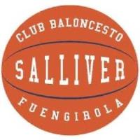
N1 FemeninoN1 FEMLuismi Montiel Pabellón La MoscaPista central Liga N1 · Jornada 4· Jornada 4J4 - sáb 17 oct CB El Palo – CB Salliver Fuengirola N1 MasculinoN1 MASCJose Esteba Pabellón La MoscaPista central Liga N1 · Jornada 3· Jornada 3J3
-
sáb 17 oct
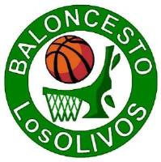
San Agustín Málaga – CB El Palo Sub22 MasculinoSub22 MASCAntonio Navajas Colegio Los OlivosMálaga Senior U22 MasculinoSEN U22 MASC · Jornada 2· Jornada 2J2 - dom 18 oct CAB Estepona – CB El Palo Cadete Femenino ACAD FEM ASergio Risoto Pabellón José Antonio PinedaPista centralEstepona CadeteCAD · Campeonato · Jornada 1· Campeonato· Campeonato· Jornada 1J1
-
dom 18 oct
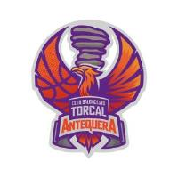
CB Torcal – CB El Palo Infantil Masculino 14INF MASC 14Quivila Pabellón 15 de julioAntequera InfantilINF · Fase Previa · Jornada 1· Fase Previa· Fase Previa· Jornada 1J1 - dom 18 oct CB El Palo – EBG´12 Infantil Femenino 13INF FEM 13Luismi Montiel CEIP Ramón del Valle Inclán Cadete 1er AñoCAD 1er Año · Fase Previa · Jornada 1· Fase Previa· Fase Previa· Jornada 1J1
- lun 19 oct EBG Málaga´12 – CB El Palo Cadete Masculino ACAD MASC AMiki Ayllón IES Litoral (PABELLÓN)Málaga CadeteCAD · Campeonato · Jornada 2· Campeonato· Campeonato· Jornada 2J2
-
vie 23 oct
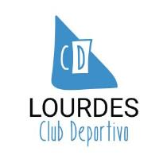
CD Lourdes – CB El Palo Infantil Femenino 13INF FEM 13Luismi Montiel Pabellón Colegio Ntra.Sra.de Lourdes de CoínCoín Cadete 1er AñoCAD 1er Año · Fase Previa · Jornada 2· Fase Previa· Fase Previa· Jornada 2J2 -
sáb 24 oct
CB El Palo – CB Rincón
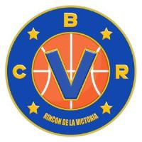
Junior Masculino 09-10JUN MASC 09-10Luis Diego Pabellón La MoscaPista 1 JuniorJUN · Fase Previa · Jornada 3· Fase Previa· Fase Previa· Jornada 3J3 - sáb 24 oct CB El Palo – CB Salliver Infantil Masculino 14INF MASC 14Quivila CEIP Ramón del Valle Inclán InfantilINF · Fase Previa · Jornada 2· Fase Previa· Fase Previa· Jornada 2J2
- sáb 24 oct CB El Palo – Rincón Basket Club Infantil Masculino 13 BINF MASC 13 BDani Garrido CEIP Ramón del Valle Inclán InfantilINF · Fase Previa · Jornada 2· Fase Previa· Fase Previa· Jornada 2J2
- sáb 24 oct EBG Málaga´13 – CB El Palo Infantil Femenino 13 BINF FEM 13 BÁlvaro González IES Litoral (PABELLÓN)Málaga InfantilINF · Fase Previa · Jornada 2· Fase Previa· Fase Previa· Jornada 2J2
-
sáb 24 oct
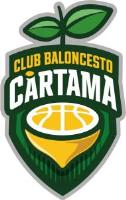
CB Cártama – CB El Palo Infantil Femenino 13-14INF FEM 13-14Rubén Pérez Ciudad Deportiva CártamaCártama InfantilINF · Fase Previa · Jornada 2· Fase Previa· Fase Previa· Jornada 2J2 -
sáb 24 oct
CB El Palo – CD Basket Norte
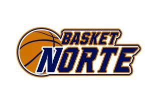
Sub22 FemeninoSub22 FEMAntoñipi Sánchez Pabellón La MoscaPista 3 Senior Provincial FemeninoSEN PROV FEM · Jornada 3· Jornada 3J3 - sáb 24 oct CB El Palo – CB Novaschool Junior MasculinoJUN MASCEnrique López Pabellón La MoscaPista 3 JuniorJUN · Campeonato · Jornada 4· Campeonato· Campeonato· Jornada 4J4
-
sáb 24 oct
CB El Palo – MBK Blanco´11
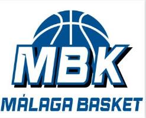
Cadete Femenino 11-12CAD FEM 11-12Rubén Rus CEIP Ramón del Valle Inclán CadeteCAD · Fase Previa · Jornada 2· Fase Previa· Fase Previa· Jornada 2J2 -
sáb 24 oct
CB El Palo – Unicaja´14*
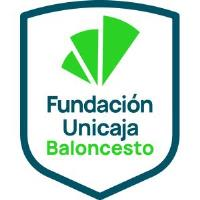
Infantil Masculino 13INF MASC 13Quivila CEIP Ramón del Valle Inclán InfantilINF · Campeonato · Jornada 2· Campeonato· Campeonato· Jornada 2J2 - sáb 24 oct Rincón Basket Club – CB El Palo Infantil Masculino 13-14INF MASC 13-14Ale Caser Parque Victoria Fitness CenterRincón de la Victoria InfantilINF · Fase Previa · Jornada 2· Fase Previa· Fase Previa· Jornada 2J2
- sáb 24 oct MBK 09-10 – CB El Palo Junior Femenino 09-10JUN FEM 09-10Antonio Sánchez CEIP Félix Revello de Toro (Teatinos)Málaga JuniorJUN · Fase Previa · Jornada 3· Fase Previa· Fase Previa· Jornada 3J3
- sáb 24 oct EBG´14 – CB El Palo Infantil Masculino 14 BINF MASC 14 BAlberto Gam IES Emilio PradosMálaga Infantil 1er AñoINF 1er Año · Fase Previa · Jornada 2· Fase Previa· Fase Previa· Jornada 2J2
-
sáb 24 oct
CB El Palo – San Estanislao
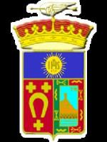
Cadete Masculino 12CAD MASC 12Cris Bazalo Pabellón La MoscaPista 3 CadeteCAD · Fase Previa · Jornada 2· Fase Previa· Fase Previa· Jornada 2J2 - sáb 24 oct Rincón Basket Club – CB El Palo Infantil Femenino 13INF FEM 13Luismi Montiel CEIP Gregorio MarañónRincón de la Victoria InfantilINF · Campeonato · Jornada 2· Campeonato· Campeonato· Jornada 2J2
- sáb 24 oct CP Mijas – CB El Palo Provincial FemeninoPROV FEMSergio Risoto Ciudad deportiva Regino Hernández de Las LagunasMijas Senior Provincial FemeninoSEN PROV FEM · Jornada 3· Jornada 3J3
- dom 25 oct CB El Palo – CB Rincón de la Victoria Sub22 MasculinoSub22 MASCAntonio Navajas Pabellón La MoscaPista 3 Senior U22 MasculinoSEN U22 MASC · Jornada 3· Jornada 3J3
- dom 25 oct CB El Palo – MBK´12 Azul Cadete Masculino 11CAD MASC 11Luis San Juan Pabellón La MoscaPista 1 CadeteCAD · Fase Previa · Jornada 2· Fase Previa· Fase Previa· Jornada 2J2
- dom 25 oct CB Algazara – CB El Palo Infantil Femenino 14INF FEM 14Rubén Rus Pabellón Blas InfantePista 1Alhaurín de la Torre InfantilINF · Fase Previa · Jornada 2· Fase Previa· Fase Previa· Jornada 2J2
-
dom 25 oct
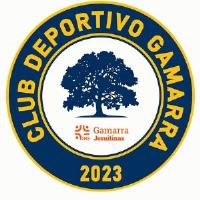
CD Gamarra – CB El Palo Cadete Masculino ACAD MASC AMiki Ayllón Colegio GamarraMálaga CadeteCAD · Campeonato · Jornada 3· Campeonato· Campeonato· Jornada 3J3 -
dom 25 oct
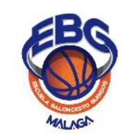
EBG Málaga – CB El Palo N1 FemeninoN1 FEMLuismi Montiel Pabellón José Mª Martín UrbanoPista BMálaga Liga N1 · Jornada 5· Jornada 5J5 -
dom 25 oct
CB El Palo – Málaga Oeste
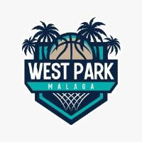
Provincial Masculino BPROV MASC BJuan Vasco Pabellón La MoscaPista 1 Senior Provincial MasculinoSEN PROV MASC · Jornada 3· Jornada 3J3 - dom 25 oct CB El Palo – CB San Pedro Negro Infantil Masculino 13INF MASC 13Quivila Pabellón La MoscaPista 3 Cadete 1er AñoCAD 1er Año · Fase Previa · Jornada 2· Fase Previa· Fase Previa· Jornada 2J2
- dom 25 oct CD Colegio El Pinar – CB El Palo N1 MasculinoN1 MASCJose Esteba Colegio El PinarPista centralAlhaurín de la Torre Liga N1 · Jornada 4· Jornada 4J4
-
dom 25 oct
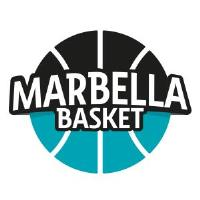
CD Marbella Basket – CB El Palo Cadete Masculino 12 BCAD MASC 12 BCarlos Moncada Pabellón Bello Horizonte - Carlos CabezasMarbella Cadete 1er AñoCAD 1er Año · Fase Previa · Jornada 2· Fase Previa· Fase Previa· Jornada 2J2 - dom 25 oct CDC Los Olivos – CB El Palo Provincial Masculino APROV MASC AEnrique López Colegio Los OlivosMálaga Senior Provincial MasculinoSEN PROV MASC · Jornada 3· Jornada 3J3
- mié 28 oct Unicaja 11-12* – CB El Palo Junior MasculinoJUN MASCEnrique López Pabellón José Mª Martín UrbanoPista AMálaga JuniorJUN · Campeonato · Jornada 3· Campeonato· Campeonato· Jornada 3J3
- sáb 31 oct CB El Palo – CB Novaschool Infantil Masculino 13-14INF MASC 13-14Ale Caser CEIP Ramón del Valle Inclán InfantilINF · Fase Previa · Jornada 3· Fase Previa· Fase Previa· Jornada 3J3
- sáb 31 oct EBG – CB El Palo Infantil Masculino 14INF MASC 14Quivila IES Emilio PradosMálaga InfantilINF · Fase Previa · Jornada 3· Fase Previa· Fase Previa· Jornada 3J3
- sáb 31 oct CB El Palo – San Estanislao Infantil Femenino 14INF FEM 14Rubén Rus CEIP Ramón del Valle Inclán InfantilINF · Fase Previa · Jornada 3· Fase Previa· Fase Previa· Jornada 3J3
- sáb 31 oct CB El Palo – MBK Blanco´13 Infantil Femenino 13-14INF FEM 13-14Rubén Pérez CEIP Ramón del Valle Inclán InfantilINF · Fase Previa · Jornada 3· Fase Previa· Fase Previa· Jornada 3J3
- sáb 31 oct CB El Palo – CB Novaschool Cadete Masculino ACAD MASC AMiki Ayllón Pabellón La MoscaPista 3 CadeteCAD · Campeonato · Jornada 4· Campeonato· Campeonato· Jornada 4J4
- sáb 31 oct CB El Palo – Unicaja´13* Cadete Femenino ACAD FEM ASergio Risoto Pabellón La MoscaPista 1 CadeteCAD · Campeonato · Jornada 2· Campeonato· Campeonato· Jornada 2J2
- sáb 31 oct MBK Azul´13 – CB El Palo Infantil Masculino 13INF MASC 13Quivila CEIP Luis BuñuelMálaga InfantilINF · Campeonato · Jornada 3· Campeonato· Campeonato· Jornada 3J3
- sáb 31 oct CB El Palo – Cdc Los Olivos Infantil Femenino 13 BINF FEM 13 BÁlvaro González CEIP Ramón del Valle Inclán InfantilINF · Fase Previa · Jornada 3· Fase Previa· Fase Previa· Jornada 3J3
-
sáb 31 oct
CB El Palo – CB Campillos
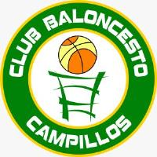
Infantil Masculino 14 BINF MASC 14 BAlberto Gam CEIP Ramón del Valle Inclán Infantil 1er AñoINF 1er Año · Fase Previa · Jornada 3· Fase Previa· Fase Previa· Jornada 3J3 - sáb 31 oct CB Cártama – CB El Palo Infantil Masculino 13 BINF MASC 13 BDani Garrido Ciudad Deportiva CártamaCártama InfantilINF · Fase Previa · Jornada 3· Fase Previa· Fase Previa· Jornada 3J3
- sáb 31 oct CAB Estepona – CB El Palo Junior FemeninoJUN FEMAle García Pabellón José Antonio PinedaPista centralEstepona JuniorJUN · Campeonato · Jornada 4· Campeonato· Campeonato· Jornada 4J4
- sáb 31 oct CB El Palo – Caja Rural Jaén N1 FemeninoN1 FEMLuismi Montiel Pabellón La MoscaPista central Liga N1 · Jornada 6· Jornada 6J6
-
dom 1 nov
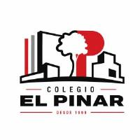
Pinar Rojo – CB El Palo Junior MasculinoJUN MASCEnrique López Colegio El PinarPista centralAlhaurín de la Torre JuniorJUN · Campeonato · Jornada 5· Campeonato· Campeonato· Jornada 5J5 - mié 4 nov CB El Palo – CB Novaschool Provincial Masculino BPROV MASC BJuan Vasco Colegio Novaschool Añoreta (Pabellón) Senior Provincial MasculinoSEN PROV MASC · Jornada 1· Jornada 1J1
-
vie 6 nov
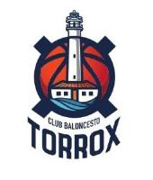
CB Torrox – CB El Palo Infantil Femenino 13-14INF FEM 13-14Rubén Pérez CEIP El MorcheTorrox InfantilINF · Fase Previa · Jornada 4· Fase Previa· Fase Previa· Jornada 4J4 - sáb 7 nov Cdc Los Olivos – CB El Palo Cadete Femenino 11-12CAD FEM 11-12Rubén Rus Colegio Los OlivosMálaga CadeteCAD · Fase Previa · Jornada 3· Fase Previa· Fase Previa· Jornada 3J3
- sáb 7 nov CB El Palo – CB Novaschool Cadete Femenino 12CAD FEM 12María Leal Pabellón La MoscaPista 3 CadeteCAD · Fase Previa · Jornada 3· Fase Previa· Fase Previa· Jornada 3J3
- sáb 7 nov CB El Palo – MBK Blanco´12 Cadete Masculino 12 BCAD MASC 12 BCarlos Moncada Pabellón La MoscaPista 3 Cadete 1er AñoCAD 1er Año · Fase Previa · Jornada 4· Fase Previa· Fase Previa· Jornada 4J4
- sáb 7 nov CB El Palo – CD Marbella Basket Infantil Masculino 14INF MASC 14Quivila CEIP Ramón del Valle Inclán InfantilINF · Fase Previa · Jornada 4· Fase Previa· Fase Previa· Jornada 4J4
- sáb 7 nov CB El Palo – CD Gamarra Infantil Masculino 13 BINF MASC 13 BDani Garrido CEIP Ramón del Valle Inclán InfantilINF · Fase Previa · Jornada 4· Fase Previa· Fase Previa· Jornada 4J4
- sáb 7 nov EBG´13 – CB El Palo Infantil Femenino 14INF FEM 14Rubén Rus IES Emilio PradosMálaga InfantilINF · Fase Previa · Jornada 4· Fase Previa· Fase Previa· Jornada 4J4
- sáb 7 nov CB Ciudad de Melilla – CB El Palo Infantil Masculino 14 BINF MASC 14 BAlberto Gam Pistas Pepe Román (Girón) - CB Ciudad de MelillaMálaga Infantil 1er AñoINF 1er Año · Fase Previa · Jornada 4· Fase Previa· Fase Previa· Jornada 4J4
- sáb 7 nov CB El Palo – MBK´10 Junior MasculinoJUN MASCEnrique López Pabellón La MoscaPista 3 JuniorJUN · Campeonato · Jornada 6· Campeonato· Campeonato· Jornada 6J6
-
sáb 7 nov
CB El Palo – El Grande
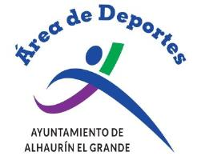
Cadete Masculino 12CAD MASC 12Cris Bazalo Pabellón La MoscaPista 3 CadeteCAD · Fase Previa · Jornada 3· Fase Previa· Fase Previa· Jornada 3J3 - sáb 7 nov CB El Palo – Baloncesto '12 Cadete Femenino ACAD FEM ASergio Risoto Pabellón La MoscaPista 1 CadeteCAD · Campeonato · Jornada 3· Campeonato· Campeonato· Jornada 3J3
-
sáb 7 nov
CB El Palo – Miramar'13
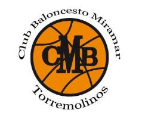
Infantil Femenino 13INF FEM 13Luismi Montiel CEIP Ramón del Valle Inclán InfantilINF · Campeonato · Jornada 3· Campeonato· Campeonato· Jornada 3J3 - sáb 7 nov CB El Palo – MBK Provincial FemeninoPROV FEMSergio Risoto Pabellón La MoscaPista 1 Senior Provincial FemeninoSEN PROV FEM · Jornada 4· Jornada 4J4
- sáb 7 nov CB El Palo – CB Rincón de la Victoria Provincial Masculino APROV MASC AEnrique López Pabellón La MoscaPista 1 Senior Provincial MasculinoSEN PROV MASC · Jornada 4· Jornada 4J4
- sáb 7 nov EBG Málaga´13 – CB El Palo Infantil Masculino 13INF MASC 13Quivila Colegio San José (PABELLÓN)Málaga InfantilINF · Campeonato · Jornada 4· Campeonato· Campeonato· Jornada 4J4
-
sáb 7 nov
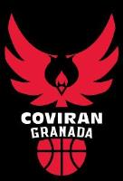
Fundación CB Granada – CB El Palo N1 FemeninoN1 FEMLuismi Montiel Pabellón VeletaGranada Liga N1 · Jornada 7· Jornada 7J7 - sáb 7 nov CD Marbella Basket – CB El Palo Sub22 MasculinoSub22 MASCAntonio Navajas Pabellón Bello Horizonte - Carlos CabezasMarbella Senior U22 MasculinoSEN U22 MASC · Jornada 4· Jornada 4J4
-
dom 8 nov
CB El Palo – Maristas Málaga
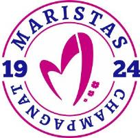
Junior Femenino 09-10JUN FEM 09-10Antonio Sánchez Pabellón La MoscaPista 3 JuniorJUN · Fase Previa · Jornada 4· Fase Previa· Fase Previa· Jornada 4J4 - dom 8 nov Club de Baloncesto – CB El Palo Infantil Masculino 13-14INF MASC 13-14Ale Caser Colegio Christian AndersenMálaga InfantilINF · Fase Previa · Jornada 4· Fase Previa· Fase Previa· Jornada 4J4
- dom 8 nov CB El Palo – CD Puerta Oscura Infantil Femenino 13INF FEM 13Luismi Montiel CEIP Ramón del Valle Inclán Cadete 1er AñoCAD 1er Año · Fase Previa · Jornada 3· Fase Previa· Fase Previa· Jornada 3J3
- dom 8 nov CD Marbella Basket – CB El Palo Infantil Femenino 13 BINF FEM 13 BÁlvaro González Pabellón Bello Horizonte - Carlos CabezasMarbella InfantilINF · Fase Previa · Jornada 4· Fase Previa· Fase Previa· Jornada 4J4
- dom 8 nov Torrebasket – CB El Palo Provincial Masculino BPROV MASC BJuan Vasco Pabellón "Maestro Salvador Sánchez"Torre del Mar Senior Provincial MasculinoSEN PROV MASC · Jornada 4· Jornada 4J4
- dom 8 nov CD Estudiantes – CB El Palo Cadete Masculino 11CAD MASC 11Luis San Juan Pabellón Municipal de NerjaNerja CadeteCAD · Fase Previa · Jornada 3· Fase Previa· Fase Previa· Jornada 3J3
- dom 8 nov CB El Palo – Rincón Basket Club Infantil Masculino 13INF MASC 13Quivila Pabellón La MoscaPista 3 Cadete 1er AñoCAD 1er Año · Fase Previa · Jornada 3· Fase Previa· Fase Previa· Jornada 3J3
- dom 8 nov CB Rincón de la Victoria – CB El Palo Sub22 FemeninoSub22 FEMAntoñipi Sánchez Pabellón Rubén RuzafaRincón de la Victoria Senior Provincial FemeninoSEN PROV FEM · Jornada 4· Jornada 4J4
- dom 8 nov EBG Málaga Tecnocasa – CB El Palo N1 MasculinoN1 MASCJose Esteba Pabellón José Mª Martín UrbanoPista AMálaga Liga N1 · Jornada 5· Jornada 5J5
- dom 8 nov CD Puerta Oscura – CB El Palo Junior Masculino 09-10JUN MASC 09-10Luis Diego IES Jardines de Puerta OscuraMálaga JuniorJUN · Fase Previa · Jornada 4· Fase Previa· Fase Previa· Jornada 4J4
- jue 12 nov CB El Palo – EBG Málaga 09/10 Sub22 MasculinoSub22 MASCAntonio Navajas CEIP Ramón del Valle Inclán Senior U22 MasculinoSEN U22 MASC · Jornada 5· Jornada 5J5
- sáb 14 nov CB El Palo – Nacex CB Torcal Junior Masculino 09-10JUN MASC 09-10Luis Diego Pabellón La MoscaPista 1 JuniorJUN · Fase Previa · Jornada 5· Fase Previa· Fase Previa· Jornada 5J5
- sáb 14 nov CB El Palo – Basket´13 Blanco Infantil Masculino 13-14INF MASC 13-14Ale Caser CEIP Ramón del Valle Inclán InfantilINF · Fase Previa · Jornada 5· Fase Previa· Fase Previa· Jornada 5J5
- sáb 14 nov Cdc Los Olivos – CB El Palo Infantil Masculino 13 BINF MASC 13 BDani Garrido Colegio Los OlivosMálaga InfantilINF · Fase Previa · Jornada 5· Fase Previa· Fase Previa· Jornada 5J5
- sáb 14 nov CB El Palo – CP Mijas Infantil Femenino 13-14INF FEM 13-14Rubén Pérez CEIP Ramón del Valle Inclán InfantilINF · Fase Previa · Jornada 5· Fase Previa· Fase Previa· Jornada 5J5
- sáb 14 nov Unicaja´14* – CB El Palo Infantil Femenino 13INF FEM 13Luismi Montiel Pabellón José Mª Martín UrbanoPista BMálaga InfantilINF · Campeonato · Jornada 4· Campeonato· Campeonato· Jornada 4J4
- sáb 14 nov CB Campillos – CB El Palo Cadete Masculino 12CAD MASC 12Cris Bazalo Pabellón Municipal CampillosCampillos CadeteCAD · Fase Previa · Jornada 4· Fase Previa· Fase Previa· Jornada 4J4
- sáb 14 nov CB El Palo – CD Marbella Basket Sub22 FemeninoSub22 FEMAntoñipi Sánchez Pabellón La MoscaPista 3 Senior Provincial FemeninoSEN PROV FEM · Jornada 5· Jornada 5J5
- sáb 14 nov CB Salliver – CB El Palo Junior MasculinoJUN MASCEnrique López Pabellón JuanitoPista 1Fuengirola JuniorJUN · Campeonato · Jornada 7· Campeonato· Campeonato· Jornada 7J7
- sáb 14 nov EBG Málaga – CB El Palo Cadete Masculino 12 BCAD MASC 12 BCarlos Moncada IES Emilio PradosMálaga Cadete 1er AñoCAD 1er Año · Fase Previa · Jornada 5· Fase Previa· Fase Previa· Jornada 5J5
- sáb 14 nov CB El Palo – Miramar '13 Negro Infantil Masculino 13INF MASC 13Quivila CEIP Ramón del Valle Inclán InfantilINF · Campeonato · Jornada 5· Campeonato· Campeonato· Jornada 5J5
- sáb 14 nov CB El Palo – CD Manilva Basket Infantil Femenino 13 BINF FEM 13 BÁlvaro González CEIP Ramón del Valle Inclán InfantilINF · Fase Previa · Jornada 5· Fase Previa· Fase Previa· Jornada 5J5
- sáb 14 nov MBK Celeste´13 – CB El Palo Infantil Femenino 14INF FEM 14Rubén Rus CEIP Tierno GalvánMálaga InfantilINF · Fase Previa · Jornada 5· Fase Previa· Fase Previa· Jornada 5J5
- sáb 14 nov CB El Palo – CD Basket Norte Provincial FemeninoPROV FEMSergio Risoto Pabellón La MoscaPista 1 Senior Provincial FemeninoSEN PROV FEM · Jornada 5· Jornada 5J5
- sáb 14 nov CB El Palo – CAB Estepona Cadete Masculino ACAD MASC AMiki Ayllón Pabellón La MoscaPista 3 CadeteCAD · Campeonato · Jornada 6· Campeonato· Campeonato· Jornada 6J6
- sáb 14 nov Torre Basket Club – CB El Palo Cadete Femenino ACAD FEM ASergio Risoto Pabellón "Maestro Salvador Sánchez"Torre del Mar CadeteCAD · Campeonato · Jornada 4· Campeonato· Campeonato· Jornada 4J4
- sáb 14 nov Miramar'11 – CB El Palo Cadete Femenino 12CAD FEM 12María Leal Palacio San MiguelTorremolinos CadeteCAD · Fase Previa · Jornada 4· Fase Previa· Fase Previa· Jornada 4J4
- sáb 14 nov CB Benalmádena – CB El Palo N1 MasculinoN1 MASCJose Esteba Polideportivo Ramón Rico Benalmádena PuebloPista centralBenalmádena Liga N1 · Jornada 6· Jornada 6J6
- dom 15 nov CB El Palo – Unicaja 11-12* Junior FemeninoJUN FEMAle García Pabellón La MoscaPista 3 JuniorJUN · Campeonato · Jornada 5· Campeonato· Campeonato· Jornada 5J5
- dom 15 nov CB El Palo – CB Benalmádena´11 Cadete Masculino 11CAD MASC 11Luis San Juan Pabellón La MoscaPista 1 CadeteCAD · Fase Previa · Jornada 4· Fase Previa· Fase Previa· Jornada 4J4
- dom 15 nov CB El Palo – El Cántaro MBK'12 Infantil Femenino 13INF FEM 13Luismi Montiel CEIP Ramón del Valle Inclán Cadete 1er AñoCAD 1er Año · Fase Previa · Jornada 4· Fase Previa· Fase Previa· Jornada 4J4
-
dom 15 nov
CB El Palo – Melilla La Salle
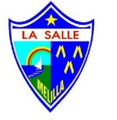
N1 FemeninoN1 FEMLuismi Montiel Pabellón La MoscaPista central Liga N1 · Jornada 8· Jornada 8J8 - dom 15 nov EBG Málaga – CB El Palo Provincial Masculino APROV MASC AEnrique López Colegio San José (PABELLÓN)Málaga Senior Provincial MasculinoSEN PROV MASC · Jornada 5· Jornada 5J5
- dom 15 nov CB Algazara – CB El Palo Infantil Masculino 14INF MASC 14Quivila Pabellón Blas InfantePista 1Alhaurín de la Torre InfantilINF · Fase Previa · Jornada 5· Fase Previa· Fase Previa· Jornada 5J5
- dom 15 nov MBK – CB El Palo Provincial Masculino BPROV MASC BJuan Vasco Ciudad Deportiva Javier Imbroda (Carranque)Málaga Senior Provincial MasculinoSEN PROV MASC · Jornada 5· Jornada 5J5
- dom 15 nov CAB Estepona – CB El Palo Infantil Masculino 13INF MASC 13Quivila Pabellón Cubierto "La Lobilla"Estepona Cadete 1er AñoCAD 1er Año · Fase Previa · Jornada 4· Fase Previa· Fase Previa· Jornada 4J4
- dom 15 nov CP Mijas – CB El Palo Junior Femenino 09-10JUN FEM 09-10Antonio Sánchez Ciudad deportiva Regino Hernández de Las LagunasMijas JuniorJUN · Fase Previa · Jornada 5· Fase Previa· Fase Previa· Jornada 5J5
- vie 20 nov CD Gamarra – CB El Palo Junior Masculino 09-10JUN MASC 09-10Luis Diego Colegio GamarraMálaga JuniorJUN · Fase Previa · Jornada 6· Fase Previa· Fase Previa· Jornada 6J6
- sáb 21 nov CB El Palo – EBG Málaga 09/10 Junior Femenino 09-10JUN FEM 09-10Antonio Sánchez Pabellón La MoscaPista 3 JuniorJUN · Fase Previa · Jornada 6· Fase Previa· Fase Previa· Jornada 6J6
-
sáb 21 nov
CB El Palo – Teresianas´12
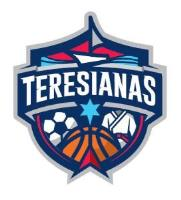
Cadete Masculino 12 BCAD MASC 12 BCarlos Moncada Pabellón La MoscaPista 3 Cadete 1er AñoCAD 1er Año · Fase Previa · Jornada 6· Fase Previa· Fase Previa· Jornada 6J6 - sáb 21 nov CB El Palo – CD Gamarra Infantil Femenino 14INF FEM 14Rubén Rus CEIP Ramón del Valle Inclán InfantilINF · Fase Previa · Jornada 6· Fase Previa· Fase Previa· Jornada 6J6
- sáb 21 nov CD Basket Norte – CB El Palo Infantil Femenino 13-14INF FEM 13-14Rubén Pérez IES Sierra BermejaMálaga InfantilINF · Fase Previa · Jornada 6· Fase Previa· Fase Previa· Jornada 6J6
- sáb 21 nov MBK Blanco´13 – CB El Palo Infantil Masculino 13-14INF MASC 13-14Ale Caser CEIP Tierno GalvánMálaga InfantilINF · Fase Previa · Jornada 6· Fase Previa· Fase Previa· Jornada 6J6
- sáb 21 nov CB El Palo – Unicaja Academy Junior MasculinoJUN MASCEnrique López Pabellón La MoscaPista 3 JuniorJUN · Campeonato · Jornada 8· Campeonato· Campeonato· Jornada 8J8
- sáb 21 nov CB El Palo – CAB Estepona Cadete Femenino ACAD FEM ASergio Risoto Pabellón La MoscaPista 1 CadeteCAD · Campeonato · Jornada 5· Campeonato· Campeonato· Jornada 5J5
- sáb 21 nov CB El Palo – CB Salliver Infantil Masculino 13INF MASC 13Quivila CEIP Ramón del Valle Inclán InfantilINF · Campeonato · Jornada 6· Campeonato· Campeonato· Jornada 6J6
- sáb 21 nov CB El Palo – Teresianas Infantil Femenino 13 BINF FEM 13 BÁlvaro González CEIP Ramón del Valle Inclán InfantilINF · Fase Previa · Jornada 6· Fase Previa· Fase Previa· Jornada 6J6
- sáb 21 nov CB El Palo – CP Mijas Infantil Masculino 14 BINF MASC 14 BAlberto Gam CEIP Ramón del Valle Inclán Infantil 1er AñoINF 1er Año · Fase Previa · Jornada 6· Fase Previa· Fase Previa· Jornada 6J6
- sáb 21 nov CB El Palo – Rincón Basket Club Provincial Masculino APROV MASC AEnrique López Pabellón La MoscaPista 1 Senior Provincial MasculinoSEN PROV MASC · Jornada 6· Jornada 6J6
- sáb 21 nov CB El Palo – EBG Málaga´12 Cadete Masculino ACAD MASC AMiki Ayllón Pabellón La MoscaPista 3 CadeteCAD · Campeonato · Jornada 7· Campeonato· Campeonato· Jornada 7J7
- sáb 21 nov EBG Málaga – CB El Palo Sub22 FemeninoSub22 FEMAntoñipi Sánchez Colegio San José (PABELLÓN)Málaga Senior Provincial FemeninoSEN PROV FEM · Jornada 6· Jornada 6J6
-
sáb 21 nov
CB El Palo – Club Andújar
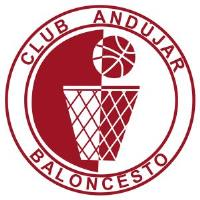
N1 MasculinoN1 MASCJose Esteba Pabellón La MoscaPista central Liga N1 · Jornada 7· Jornada 7J7 - dom 22 nov CAB Estepona – CB El Palo Infantil Femenino 13INF FEM 13Luismi Montiel Pabellón José Antonio PinedaPista centralEstepona InfantilINF · Campeonato · Jornada 5· Campeonato· Campeonato· Jornada 5J5
- dom 22 nov Rincón Basket Club – CB El Palo Infantil Masculino 14INF MASC 14Quivila CEIP Gregorio MarañónRincón de la Victoria InfantilINF · Fase Previa · Jornada 6· Fase Previa· Fase Previa· Jornada 6J6
- dom 22 nov "Juntas" Torrebasket – CB El Palo Junior FemeninoJUN FEMAle García Pabellón "Maestro Salvador Sánchez"Torre del Mar JuniorJUN · Campeonato · Jornada 6· Campeonato· Campeonato· Jornada 6J6
- dom 22 nov Presentación Granada – CB El Palo N1 FemeninoN1 FEMLuismi Montiel Pabellón Paquillo FernándezGranada Liga N1 · Jornada 9· Jornada 9J9
- dom 22 nov CB El Palo – CDC Los Olivos Provincial Masculino BPROV MASC BJuan Vasco Pabellón La MoscaPista 1 Senior Provincial MasculinoSEN PROV MASC · Jornada 6· Jornada 6J6
- dom 22 nov CB Rincón de la Victoria – CB El Palo Provincial FemeninoPROV FEMSergio Risoto Pabellón Rubén RuzafaRincón de la Victoria Senior Provincial FemeninoSEN PROV FEM · Jornada 6· Jornada 6J6
- dom 22 nov CD Puerta Oscura – CB El Palo Infantil Masculino 13 BINF MASC 13 BDani Garrido IES Jardines de Puerta OscuraMálaga InfantilINF · Fase Previa · Jornada 6· Fase Previa· Fase Previa· Jornada 6J6
- dom 22 nov Colegio El Pinar – CB El Palo Sub22 MasculinoSub22 MASCAntonio Navajas Colegio El PinarPista centralAlhaurín de la Torre Senior U22 MasculinoSEN U22 MASC · Jornada 6· Jornada 6J6
-
vie 27 nov
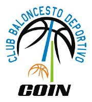
CB Deportivo Coín – CB El Palo Infantil Femenino 13 BINF FEM 13 BÁlvaro González Anexo Polideportivo Municipal CoínCoín InfantilINF · Fase Previa · Jornada 7· Fase Previa· Fase Previa· Jornada 7J7 - sáb 28 nov CB El Palo – Pinar Gris Junior Masculino 09-10JUN MASC 09-10Luis Diego Pabellón La MoscaPista 1 JuniorJUN · Fase Previa · Jornada 7· Fase Previa· Fase Previa· Jornada 7J7
- sáb 28 nov MBK Azul´11 – CB El Palo Cadete Femenino ACAD FEM ASergio Risoto Ciudad Deportiva Javier Imbroda (Carranque)Málaga CadeteCAD · Campeonato · Jornada 6· Campeonato· Campeonato· Jornada 6J6
- sáb 28 nov CB El Palo – CD La Goleta Cadete Femenino 12CAD FEM 12María Leal Pabellón La MoscaPista 3 CadeteCAD · Fase Previa · Jornada 5· Fase Previa· Fase Previa· Jornada 5J5
- sáb 28 nov CB El Palo – CD Basket Norte Infantil Masculino 13-14INF MASC 13-14Ale Caser CEIP Ramón del Valle Inclán InfantilINF · Fase Previa · Jornada 7· Fase Previa· Fase Previa· Jornada 7J7
-
sáb 28 nov
CB El Palo – CD Málaga Oeste
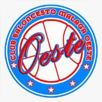
Infantil Masculino 14INF MASC 14Quivila CEIP Ramón del Valle Inclán InfantilINF · Fase Previa · Jornada 7· Fase Previa· Fase Previa· Jornada 7J7 - sáb 28 nov CB El Palo – El Grande Infantil Masculino 13 BINF MASC 13 BDani Garrido CEIP Ramón del Valle Inclán InfantilINF · Fase Previa · Jornada 7· Fase Previa· Fase Previa· Jornada 7J7
- sáb 28 nov CB El Palo – CB Novaschool Infantil Femenino 13-14INF FEM 13-14Rubén Pérez CEIP Ramón del Valle Inclán InfantilINF · Fase Previa · Jornada 7· Fase Previa· Fase Previa· Jornada 7J7
- sáb 28 nov El Grande – CB El Palo Infantil Femenino 14INF FEM 14Rubén Rus Polideportivo Municipal Alhaurín el GrandeAlhaurín el Grande InfantilINF · Fase Previa · Jornada 7· Fase Previa· Fase Previa· Jornada 7J7
- sáb 28 nov Miramar'14 – CB El Palo Infantil Masculino 14 BINF MASC 14 BAlberto Gam Palacio San MiguelTorremolinos Infantil 1er AñoINF 1er Año · Fase Previa · Jornada 7· Fase Previa· Fase Previa· Jornada 7J7
-
sáb 28 nov
CB El Palo – Academia 675
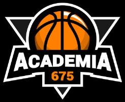
Sub22 FemeninoSub22 FEMAntoñipi Sánchez Pabellón La MoscaPista 3 Senior Provincial FemeninoSEN PROV FEM · Jornada 7· Jornada 7J7 - sáb 28 nov CB El Palo – Teresianas Cadete Masculino 12CAD MASC 12Cris Bazalo Pabellón La MoscaPista 3 CadeteCAD · Fase Previa · Jornada 5· Fase Previa· Fase Previa· Jornada 5J5
- sáb 28 nov CB El Palo – CD Marbella Basket Cadete Femenino 11-12CAD FEM 11-12Rubén Rus CEIP Ramón del Valle Inclán CadeteCAD · Fase Previa · Jornada 5· Fase Previa· Fase Previa· Jornada 5J5
- sáb 28 nov CB El Palo – MBK Azul´13 Infantil Femenino 13INF FEM 13Luismi Montiel CEIP Ramón del Valle Inclán InfantilINF · Campeonato · Jornada 6· Campeonato· Campeonato· Jornada 6J6
- sáb 28 nov Miramar Torremolinos – CB El Palo Junior Femenino 09-10JUN FEM 09-10Antonio Sánchez Palacio San MiguelTorremolinos JuniorJUN · Fase Previa · Jornada 7· Fase Previa· Fase Previa· Jornada 7J7
- sáb 28 nov CB Rincón de la Victoria – CB El Palo Provincial Masculino BPROV MASC BJuan Vasco Pabellón Rubén RuzafaRincón de la Victoria Senior Provincial MasculinoSEN PROV MASC · Jornada 7· Jornada 7J7
- sáb 28 nov CB El Palo – CD Marbella Basket Provincial FemeninoPROV FEMSergio Risoto Pabellón La MoscaPista 1 Senior Provincial FemeninoSEN PROV FEM · Jornada 7· Jornada 7J7
- sáb 28 nov CB El Palo – CD Gamarra Cadete Masculino ACAD MASC AMiki Ayllón Pabellón La MoscaPista 3 CadeteCAD · Campeonato · Jornada 8· Campeonato· Campeonato· Jornada 8J8
- sáb 28 nov CB Salliver – CB El Palo Cadete Masculino 11CAD MASC 11Luis San Juan Colegio SalliverFuengirola CadeteCAD · Fase Previa · Jornada 5· Fase Previa· Fase Previa· Jornada 5J5
- sáb 28 nov Miramar '12 – CB El Palo Infantil Femenino 13INF FEM 13Luismi Montiel Palacio San MiguelTorremolinos Cadete 1er AñoCAD 1er Año · Fase Previa · Jornada 5· Fase Previa· Fase Previa· Jornada 5J5
- sáb 28 nov CB El Palo – CAB Estepona N1 FemeninoN1 FEMLuismi Montiel Pabellón La MoscaPista central Liga N1 · Jornada 10· Jornada 10J10
-
sáb 28 nov
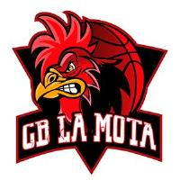
CB La Mota – CB El Palo N1 MasculinoN1 MASCJose Esteba Complejo Polideportivo Alcalá La RealAlcalá la Real Liga N1 · Jornada 8· Jornada 8J8 - dom 29 nov Unicaja´14* – CB El Palo Infantil Masculino 13INF MASC 13Quivila Pabellón José Mª Martín UrbanoPista BMálaga InfantilINF · Campeonato · Jornada 7· Campeonato· Campeonato· Jornada 7J7
- dom 29 nov CB Benalmádena – CB El Palo Junior MasculinoJUN MASCEnrique López Polideportivo Ramón Rico Benalmádena PuebloPista centralBenalmádena JuniorJUN · Campeonato · Jornada 9· Campeonato· Campeonato· Jornada 9J9
- dom 29 nov CB Benalmádena´13 – CB El Palo Cadete Masculino 12 BCAD MASC 12 BCarlos Moncada Polideportivo Ramón Rico Benalmádena PuebloPista centralBenalmádena Cadete 1er AñoCAD 1er Año · Fase Previa · Jornada 7· Fase Previa· Fase Previa· Jornada 7J7
- dom 29 nov CB El Palo – CB Novaschool Sub22 MasculinoSub22 MASCAntonio Navajas Pabellón La MoscaPista 3 Senior U22 MasculinoSEN U22 MASC · Jornada 7· Jornada 7J7
- dom 29 nov CB El Palo – CB Salliver Junior FemeninoJUN FEMAle García Pabellón La MoscaPista 3 JuniorJUN · Campeonato · Jornada 7· Campeonato· Campeonato· Jornada 7J7
- dom 29 nov CB El Palo – CD La Goleta Infantil Masculino 13INF MASC 13Quivila Pabellón La MoscaPista 3 Cadete 1er AñoCAD 1er Año · Fase Previa · Jornada 5· Fase Previa· Fase Previa· Jornada 5J5
- dom 29 nov CB Novaschool – CB El Palo Provincial Masculino APROV MASC AEnrique López Colegio Novaschool Añoreta (Pabellón)Rincón de la Victoria Senior Provincial MasculinoSEN PROV MASC · Jornada 7· Jornada 7J7
- mar 1 dic CB Alhaurín de la Torre – CB El Palo Sub22 FemeninoSub22 FEMAntoñipi Sánchez Pabellón Blas InfantePista centralAlhaurín de la Torre Senior U22 FemeninoSEN U22 FEM · Jornada 1· Jornada 1J1
- sáb 5 dic CB Novaschool – CB El Palo Junior MasculinoJUN MASCEnrique López Colegio Novaschool Añoreta (Pabellón)Rincón de la Victoria JuniorJUN · Campeonato · Jornada 10· Campeonato· Campeonato· Jornada 10J10
- sáb 5 dic CB El Palo – Unicaja N1 FemeninoN1 FEMLuismi Montiel Pabellón La MoscaPista central Liga N1 · Jornada 11· Jornada 11J11
- sáb 12 dic CB El Palo – CB San Pedro Junior Femenino 09-10JUN FEM 09-10Antonio Sánchez Pabellón La MoscaPista 3 JuniorJUN · Fase Previa · Jornada 8· Fase Previa· Fase Previa· Jornada 8J8
- sáb 12 dic CB Novaschool – CB El Palo Cadete Masculino ACAD MASC AMiki Ayllón Colegio Novaschool Añoreta (Pabellón)Rincón de la Victoria CadeteCAD · Campeonato · Jornada 9· Campeonato· Campeonato· Jornada 9J9
- sáb 12 dic Maristas Málaga – CB El Palo Cadete Femenino 12CAD FEM 12María Leal Colegio HH MaristasMálaga CadeteCAD · Fase Previa · Jornada 6· Fase Previa· Fase Previa· Jornada 6J6
- sáb 12 dic CB El Palo – EBG Málaga 09/10 Junior MasculinoJUN MASCEnrique López Pabellón La MoscaPista 3 JuniorJUN · Campeonato · Jornada 11· Campeonato· Campeonato· Jornada 11J11
- sáb 12 dic CB El Palo – EBG Málaga´11 Cadete Femenino ACAD FEM ASergio Risoto Pabellón La MoscaPista 1 CadeteCAD · Campeonato · Jornada 7· Campeonato· Campeonato· Jornada 7J7
- sáb 12 dic CB El Palo – MBK Azul´13 Infantil Masculino 13INF MASC 13Quivila CEIP Ramón del Valle Inclán InfantilINF · Campeonato · Jornada 8· Campeonato· Campeonato· Jornada 8J8
- sáb 12 dic CB Salliver – CB El Palo Infantil Femenino 13INF FEM 13Luismi Montiel Polideportivo Municipal ElolaFuengirola InfantilINF · Campeonato · Jornada 7· Campeonato· Campeonato· Jornada 7J7
- sáb 12 dic CB Alhaurín de la Torre – CB El Palo Sub22 FemeninoSub22 FEMAntoñipi Sánchez Pabellón Blas InfantePista centralAlhaurín de la Torre Senior Provincial FemeninoSEN PROV FEM · Jornada 8· Jornada 8J8
- sáb 12 dic EBG Málaga – CB El Palo Provincial FemeninoPROV FEMSergio Risoto Colegio San José (PABELLÓN)Málaga Senior Provincial FemeninoSEN PROV FEM · Jornada 8· Jornada 8J8
-
sáb 12 dic
CB El Palo – CB Alhaurín de la Torre
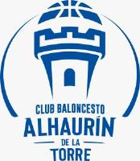
N1 MasculinoN1 MASCJose Esteba Pabellón La MoscaPista central Liga N1 · Jornada 9· Jornada 9J9 - sáb 12 dic El Toyo – CB El Palo N1 FemeninoN1 FEMLuismi Montiel Pabellón del ToyoEl Toyo Liga N1 · Jornada 12· Jornada 12J12
- dom 13 dic Rincón Basket Club – CB El Palo Sub22 MasculinoSub22 MASCAntonio Navajas Pabellón Rubén RuzafaRincón de la Victoria Senior U22 MasculinoSEN U22 MASC · Jornada 8· Jornada 8J8
- dom 13 dic CB El Palo – EBG Málaga Provincial Masculino BPROV MASC BJuan Vasco Pabellón La MoscaPista 1 Senior Provincial MasculinoSEN PROV MASC · Jornada 8· Jornada 8J8
- dom 13 dic MBK – CB El Palo Provincial Masculino APROV MASC AEnrique López Ciudad Deportiva Javier Imbroda (Carranque)Málaga Senior Provincial MasculinoSEN PROV MASC · Jornada 8· Jornada 8J8
- dom 13 dic CB San Pedro 11/12 – CB El Palo Cadete Femenino 11-12CAD FEM 11-12Rubén Rus Pabellón Sergio ScarioloSan Pedro de Alcántara CadeteCAD · Fase Previa · Jornada 6· Fase Previa· Fase Previa· Jornada 6J6
- sáb 19 dic CB El Palo – Rincón Basket Club Cadete Femenino 12CAD FEM 12María Leal Pabellón La MoscaPista 3 CadeteCAD · Fase Previa · Jornada 7· Fase Previa· Fase Previa· Jornada 7J7
- sáb 19 dic CB El Palo – Unicaja 11-12* Junior MasculinoJUN MASCEnrique López Pabellón La MoscaPista 3 JuniorJUN · Campeonato · Jornada 12· Campeonato· Campeonato· Jornada 12J12
- sáb 19 dic CB El Palo – CAB Estepona Cadete Femenino ACAD FEM ASergio Risoto Pabellón La MoscaPista 1 CadeteCAD · Campeonato · Jornada 8· Campeonato· Campeonato· Jornada 8J8
- sáb 19 dic CB El Palo – Alhaurïn de La Torre Cadete Femenino 11-12CAD FEM 11-12Rubén Rus CEIP Ramón del Valle Inclán CadeteCAD · Fase Previa · Jornada 7· Fase Previa· Fase Previa· Jornada 7J7
- sáb 19 dic CB El Palo – EBG Málaga´13 Infantil Masculino 13INF MASC 13Quivila CEIP Ramón del Valle Inclán InfantilINF · Campeonato · Jornada 9· Campeonato· Campeonato· Jornada 9J9
- sáb 19 dic CB El Palo – San Agustín Málaga Sub22 MasculinoSub22 MASCAntonio Navajas Pabellón La MoscaPista 3 Senior U22 MasculinoSEN U22 MASC · Jornada 9· Jornada 9J9
- sáb 19 dic MBK – CB El Palo N1 MasculinoN1 MASCJose Esteba Ciudad Deportiva Javier Imbroda (Carranque)Málaga Liga N1 · Jornada 10· Jornada 10J10
- sáb 19 dic CB El Palo – CD Roquetas BC N1 FemeninoN1 FEMLuismi Montiel Pabellón La MoscaPista central Liga N1 · Jornada 13· Jornada 13J13
- dom 20 dic CB El Palo – CAB Estepona Junior FemeninoJUN FEMAle García Pabellón La MoscaPista 3 JuniorJUN · Campeonato · Jornada 9· Campeonato· Campeonato· Jornada 9J9
- sáb 9 ene Unicaja 11-12* – CB El Palo Junior FemeninoJUN FEMAle García Pabellón José Mª Martín UrbanoPista AMálaga JuniorJUN · Campeonato · Jornada 10· Campeonato· Campeonato· Jornada 10J10
- sáb 9 ene CB Novaschool – CB El Palo Junior MasculinoJUN MASCEnrique López Colegio Novaschool Añoreta (Pabellón)Rincón de la Victoria JuniorJUN · Campeonato · Jornada 13· Campeonato· Campeonato· Jornada 13J13
- sáb 9 ene Unicaja´13* – CB El Palo Cadete Femenino ACAD FEM ASergio Risoto Pabellón José Mª Martín UrbanoPista BMálaga CadeteCAD · Campeonato · Jornada 9· Campeonato· Campeonato· Jornada 9J9
- sáb 9 ene CB El Palo – El Plantel GMASB N1 FemeninoN1 FEMLuismi Montiel Pabellón La MoscaPista central Liga N1 · Jornada 14· Jornada 14J14
- sáb 9 ene CB El Palo – Unicaja N1 MasculinoN1 MASCJose Esteba Pabellón La MoscaPista central Liga N1 · Jornada 11· Jornada 11J11
- dom 10 ene CB Rincón de la Victoria – CB El Palo Sub22 MasculinoSub22 MASCAntonio Navajas Pabellón Rubén RuzafaRincón de la Victoria Senior U22 MasculinoSEN U22 MASC · Jornada 10· Jornada 10J10
- sáb 16 ene CD La Goleta – CB El Palo Infantil Femenino 13INF FEM 13Luismi Montiel Colegio San Juan de Dios GoletaMálaga InfantilINF · Campeonato · Jornada 8· Campeonato· Campeonato· Jornada 8J8
- sáb 16 ene CB El Palo – MBK Sub22 FemeninoSub22 FEMAntoñipi Sánchez Pabellón La MoscaPista 3 Senior Provincial FemeninoSEN PROV FEM · Jornada 9· Jornada 9J9
- sáb 16 ene CB El Palo – Pinar Rojo Junior MasculinoJUN MASCEnrique López Pabellón La MoscaPista 3 JuniorJUN · Campeonato · Jornada 14· Campeonato· Campeonato· Jornada 14J14
- sáb 16 ene CB Salliver – CB El Palo Junior Femenino 09-10JUN FEM 09-10Antonio Sánchez Pabellón Training Center HiguerónFuengirola JuniorJUN · Fase Previa · Jornada 9· Fase Previa· Fase Previa· Jornada 9J9
- sáb 16 ene CB El Palo – Academia 675 Provincial FemeninoPROV FEMSergio Risoto Pabellón La MoscaPista 1 Senior Provincial FemeninoSEN PROV FEM · Jornada 9· Jornada 9J9
- sáb 16 ene CB El Palo – Málaga Oeste Provincial Masculino APROV MASC AEnrique López Pabellón La MoscaPista 1 Senior Provincial MasculinoSEN PROV MASC · Jornada 9· Jornada 9J9
- sáb 16 ene Baloncesto '12 – CB El Palo Cadete Femenino ACAD FEM ASergio Risoto Ciudad deportiva Regino Hernández de Las LagunasMijas CadeteCAD · Campeonato · Jornada 10· Campeonato· Campeonato· Jornada 10J10
- sáb 16 ene CB La Mojonera – CB El Palo N1 FemeninoN1 FEMLuismi Montiel Pabellón Municipal La MojoneraLa Mojonera Liga N1 · Jornada 15· Jornada 15J15
- sáb 16 ene Caja Rural Jaén – CB El Palo N1 MasculinoN1 MASCJose Esteba Pabellón Carlos Martínez EstebanJaén Liga N1 · Jornada 12· Jornada 12J12
- dom 17 ene CB El Palo – CD Marbella Basket Sub22 MasculinoSub22 MASCAntonio Navajas Pabellón La MoscaPista 3 Senior U22 MasculinoSEN U22 MASC · Jornada 11· Jornada 11J11
- dom 17 ene Miramar '13 Negro – CB El Palo Infantil Masculino 13INF MASC 13Quivila Palacio San MiguelTorremolinos InfantilINF · Campeonato · Jornada 10· Campeonato· Campeonato· Jornada 10J10
- dom 17 ene Rincón Basket Club – CB El Palo Provincial Masculino BPROV MASC BJuan Vasco Pabellón Rubén RuzafaRincón de la Victoria Senior Provincial MasculinoSEN PROV MASC · Jornada 9· Jornada 9J9
- sáb 23 ene CB El Palo – CB Novaschool Junior Femenino 09-10JUN FEM 09-10Antonio Sánchez Pabellón La MoscaPista 3 JuniorJUN · Fase Previa · Jornada 10· Fase Previa· Fase Previa· Jornada 10J10
- sáb 23 ene CB El Palo – Torre Basket Club Cadete Femenino ACAD FEM ASergio Risoto Pabellón La MoscaPista 1 CadeteCAD · Campeonato · Jornada 11· Campeonato· Campeonato· Jornada 11J11
- sáb 23 ene CB El Palo – Rincón Basket Club Infantil Femenino 13INF FEM 13Luismi Montiel CEIP Ramón del Valle Inclán InfantilINF · Campeonato · Jornada 9· Campeonato· Campeonato· Jornada 9J9
- sáb 23 ene EBG Málaga 09/10 – CB El Palo Sub22 MasculinoSub22 MASCAntonio Navajas Colegio San José (PABELLÓN)Málaga Senior U22 MasculinoSEN U22 MASC · Jornada 12· Jornada 12J12
- sáb 23 ene CB El Palo – CB Alhaurín de la Torre Provincial FemeninoPROV FEMSergio Risoto Pabellón La MoscaPista 1 Senior Provincial FemeninoSEN PROV FEM · Jornada 10· Jornada 10J10
- sáb 23 ene CB El Palo – Torrebasket Provincial Masculino APROV MASC AEnrique López Pabellón La MoscaPista 1 Senior Provincial MasculinoSEN PROV MASC · Jornada 10· Jornada 10J10
- sáb 23 ene CB El Palo – Linaqua CB Linares N1 MasculinoN1 MASCJose Esteba Pabellón La MoscaPista central Liga N1 · Jornada 13· Jornada 13J13
- sáb 23 ene CP Mijas – CB El Palo Sub22 FemeninoSub22 FEMAntoñipi Sánchez Ciudad deportiva Regino Hernández de Las LagunasMijas Senior Provincial FemeninoSEN PROV FEM · Jornada 10· Jornada 10J10
- dom 24 ene Hispania Agustinos – CB El Palo N1 FemeninoN1 FEMLuismi Montiel Colegio AgustinosGranada Liga N1 · Jornada 3· Jornada 3J3
- dom 24 ene MBK´10 – CB El Palo Junior MasculinoJUN MASCEnrique López Ciudad Deportiva Javier Imbroda (Carranque)Málaga JuniorJUN · Campeonato · Jornada 15· Campeonato· Campeonato· Jornada 15J15
- dom 24 ene CB Novaschool – CB El Palo Provincial Masculino BPROV MASC BJuan Vasco Colegio Novaschool Añoreta (Pabellón)Rincón de la Victoria Senior Provincial MasculinoSEN PROV MASC · Jornada 10· Jornada 10J10
- vie 29 ene CD Gamarra – CB El Palo Junior Femenino 09-10JUN FEM 09-10Antonio Sánchez Colegio GamarraMálaga JuniorJUN · Fase Previa · Jornada 11· Fase Previa· Fase Previa· Jornada 11J11
- sáb 30 ene CB El PaloAntoñipi Sánchez – CB El PaloSergio Risoto Sub22 FemeninoSub22 FEMProvincial FemeninoPROV FEM Pabellón La MoscaPista 3 Senior Provincial FemeninoSEN PROV FEM · Jornada 11· Jornada 11J11
- sáb 30 ene CB El Palo – CB Salliver Junior MasculinoJUN MASCEnrique López Pabellón La MoscaPista 3 JuniorJUN · Campeonato · Jornada 16· Campeonato· Campeonato· Jornada 16J16
- sáb 30 ene CB El Palo – Colegio El Pinar Sub22 MasculinoSub22 MASCAntonio Navajas Pabellón La MoscaPista 3 Senior U22 MasculinoSEN U22 MASC · Jornada 13· Jornada 13J13
- sáb 30 ene CB Salliver Fuengirola – CB El Palo N1 MasculinoN1 MASCJose Esteba Pabellón JuanitoPista centralFuengirola Liga N1 · Jornada 14· Jornada 14J14
- sáb 30 ene CB Salliver Fuengirola – CB El Palo N1 FemeninoN1 FEMLuismi Montiel Pabellón JuanitoPista centralFuengirola Liga N1 · Jornada 17· Jornada 17J17
- dom 31 ene Miramar'13 – CB El Palo Infantil Femenino 13INF FEM 13Luismi Montiel Palacio San MiguelTorremolinos InfantilINF · Campeonato · Jornada 10· Campeonato· Campeonato· Jornada 10J10
- dom 31 ene CB El PaloJuan Vasco – CB El PaloEnrique López Provincial Masculino BPROV MASC BProvincial Masculino APROV MASC A Pabellón La MoscaPista 1 Senior Provincial MasculinoSEN PROV MASC · Jornada 11· Jornada 11J11
- dom 31 ene CAB Estepona – CB El Palo Cadete Femenino ACAD FEM ASergio Risoto Pabellón José Antonio PinedaPista centralEstepona CadeteCAD · Campeonato · Jornada 12· Campeonato· Campeonato· Jornada 12J12
- sáb 6 feb CB El Palo – MBK Azul´11 Cadete Femenino ACAD FEM ASergio Risoto Pabellón La MoscaPista 1 CadeteCAD · Campeonato · Jornada 13· Campeonato· Campeonato· Jornada 13J13
- sáb 6 feb CB El Palo – Unicaja´14* Infantil Femenino 13INF FEM 13Luismi Montiel CEIP Ramón del Valle Inclán InfantilINF · Campeonato · Jornada 11· Campeonato· Campeonato· Jornada 11J11
- sáb 6 feb Unicaja Academy – CB El Palo Junior MasculinoJUN MASCEnrique López Pabellón José Mª Martín UrbanoPista AMálaga JuniorJUN · Campeonato · Jornada 17· Campeonato· Campeonato· Jornada 17J17
- sáb 6 feb CB El Palo – CP Mijas Provincial FemeninoPROV FEMSergio Risoto Pabellón La MoscaPista 1 Senior Provincial FemeninoSEN PROV FEM · Jornada 12· Jornada 12J12
- sáb 6 feb CB El Palo – CDC Los Olivos Provincial Masculino APROV MASC AEnrique López Pabellón La MoscaPista 1 Senior Provincial MasculinoSEN PROV MASC · Jornada 12· Jornada 12J12
- sáb 6 feb CB El Palo – CD Colegio El Pinar N1 MasculinoN1 MASCJose Esteba Pabellón La MoscaPista central Liga N1 · Jornada 15· Jornada 15J15
- sáb 6 feb CB El Palo – EBG Málaga N1 FemeninoN1 FEMLuismi Montiel Pabellón La MoscaPista central Liga N1 · Jornada 18· Jornada 18J18
- dom 7 feb Málaga Oeste – CB El Palo Provincial Masculino BPROV MASC BJuan Vasco IES Litoral (PABELLÓN)Málaga Senior Provincial MasculinoSEN PROV MASC · Jornada 12· Jornada 12J12
- dom 7 feb CB Novaschool – CB El Palo Sub22 MasculinoSub22 MASCAntonio Navajas Colegio Novaschool Añoreta (Pabellón)Rincón de la Victoria Senior U22 MasculinoSEN U22 MASC · Jornada 14· Jornada 14J14
- dom 7 feb CD Basket Norte – CB El Palo Sub22 FemeninoSub22 FEMAntoñipi Sánchez IES Sierra BermejaMálaga Senior Provincial FemeninoSEN PROV FEM · Jornada 12· Jornada 12J12
- sáb 13 feb CB El Palo – CB Rincón de la Victoria Sub22 FemeninoSub22 FEMAntoñipi Sánchez Pabellón La MoscaPista 3 Senior Provincial FemeninoSEN PROV FEM · Jornada 13· Jornada 13J13
- sáb 13 feb CB El Palo – CB Benalmádena Junior MasculinoJUN MASCEnrique López Pabellón La MoscaPista 3 JuniorJUN · Campeonato · Jornada 18· Campeonato· Campeonato· Jornada 18J18
- sáb 13 feb EBG Málaga´11 – CB El Palo Cadete Femenino ACAD FEM ASergio Risoto IES Litoral (PABELLÓN)Málaga CadeteCAD · Campeonato · Jornada 14· Campeonato· Campeonato· Jornada 14J14
- sáb 13 feb CB El Palo – CAB Estepona Infantil Femenino 13INF FEM 13Luismi Montiel CEIP Ramón del Valle Inclán InfantilINF · Campeonato · Jornada 12· Campeonato· Campeonato· Jornada 12J12
- sáb 13 feb CB Rincón de la Victoria – CB El Palo Provincial Masculino APROV MASC AEnrique López Pabellón Rubén RuzafaRincón de la Victoria Senior Provincial MasculinoSEN PROV MASC · Jornada 13· Jornada 13J13
- sáb 13 feb Caja Rural Jaén – CB El Palo N1 FemeninoN1 FEMLuismi Montiel Pabellón Carlos Martínez EstebanJaén Liga N1 · Jornada 19· Jornada 19J19
- sáb 13 feb CB El Palo – EBG Málaga Tecnocasa N1 MasculinoN1 MASCJose Esteba Pabellón La MoscaPista central Liga N1 · Jornada 16· Jornada 16J16
- dom 14 feb MBK – CB El Palo Provincial FemeninoPROV FEMSergio Risoto Ciudad Deportiva Javier Imbroda (Carranque)Málaga Senior Provincial FemeninoSEN PROV FEM · Jornada 13· Jornada 13J13
- dom 14 feb CB El Palo – Torrebasket Provincial Masculino BPROV MASC BJuan Vasco Pabellón La MoscaPista 1 Senior Provincial MasculinoSEN PROV MASC · Jornada 13· Jornada 13J13
- sáb 20 feb MBK Azul´13 – CB El Palo Infantil Femenino 13INF FEM 13Luismi Montiel CEIP Félix Revello de Toro (Teatinos)Málaga InfantilINF · Campeonato · Jornada 13· Campeonato· Campeonato· Jornada 13J13
- sáb 20 feb CB El Palo – EBG Málaga Provincial Masculino APROV MASC AEnrique López Pabellón La MoscaPista 1 Senior Provincial MasculinoSEN PROV MASC · Jornada 14· Jornada 14J14
- sáb 20 feb CB El Palo – Fundación CB Granada N1 FemeninoN1 FEMLuismi Montiel Pabellón La MoscaPista central Liga N1 · Jornada 20· Jornada 20J20
- sáb 20 feb CB El Palo – CB Benalmádena N1 MasculinoN1 MASCJose Esteba Pabellón La MoscaPista central Liga N1 · Jornada 17· Jornada 17J17
- dom 21 feb CB El Palo – MBK Provincial Masculino BPROV MASC BJuan Vasco Pabellón La MoscaPista 1 Senior Provincial MasculinoSEN PROV MASC · Jornada 14· Jornada 14J14
- sáb 6 mar CB El Palo – CB Salliver Infantil Femenino 13INF FEM 13Luismi Montiel CEIP Ramón del Valle Inclán InfantilINF · Campeonato · Jornada 14· Campeonato· Campeonato· Jornada 14J14
- sáb 6 mar CD Marbella Basket – CB El Palo Sub22 FemeninoSub22 FEMAntoñipi Sánchez Pabellón Bello Horizonte - Carlos CabezasMarbella Senior Provincial FemeninoSEN PROV FEM · Jornada 14· Jornada 14J14
- sáb 6 mar Club Andújar – CB El Palo N1 MasculinoN1 MASCJose Esteba Pabellón Mun José L. Fernández MenaAndújar Liga N1 · Jornada 18· Jornada 18J18
- dom 7 mar Melilla La Salle – CB El Palo N1 FemeninoN1 FEMLuismi Montiel Pabellón Guillermo García Pezzi-MelillaMelilla Liga N1 · Jornada 21· Jornada 21J21
- dom 7 mar Rincón Basket Club – CB El Palo Provincial Masculino APROV MASC AEnrique López Pabellón Rubén RuzafaRincón de la Victoria Senior Provincial MasculinoSEN PROV MASC · Jornada 15· Jornada 15J15
- dom 7 mar CD Basket Norte – CB El Palo Provincial FemeninoPROV FEMSergio Risoto IES Sierra BermejaMálaga Senior Provincial FemeninoSEN PROV FEM · Jornada 14· Jornada 14J14
- dom 7 mar CDC Los Olivos – CB El Palo Provincial Masculino BPROV MASC BJuan Vasco Colegio Los OlivosMálaga Senior Provincial MasculinoSEN PROV MASC · Jornada 15· Jornada 15J15
- sáb 13 mar CB El Palo – EBG Málaga Sub22 FemeninoSub22 FEMAntoñipi Sánchez Pabellón La MoscaPista 3 Senior Provincial FemeninoSEN PROV FEM · Jornada 15· Jornada 15J15
- sáb 13 mar CB El Palo – CB Rincón de la Victoria Provincial FemeninoPROV FEMSergio Risoto Pabellón La MoscaPista 1 Senior Provincial FemeninoSEN PROV FEM · Jornada 15· Jornada 15J15
- sáb 13 mar CB El Palo – CB Novaschool Provincial Masculino APROV MASC AEnrique López Pabellón La MoscaPista 1 Senior Provincial MasculinoSEN PROV MASC · Jornada 16· Jornada 16J16
- sáb 13 mar CB El Palo – CB La Mota N1 MasculinoN1 MASCJose Esteba Pabellón La MoscaPista central Liga N1 · Jornada 19· Jornada 19J19
- sáb 13 mar CB El Palo – Presentación Granada N1 FemeninoN1 FEMLuismi Montiel Pabellón La MoscaPista central Liga N1 · Jornada 22· Jornada 22J22
- dom 14 mar CB El Palo – CB Rincón de la Victoria Provincial Masculino BPROV MASC BJuan Vasco Pabellón La MoscaPista 1 Senior Provincial MasculinoSEN PROV MASC · Jornada 16· Jornada 16J16
- sáb 20 mar CB Alhaurín de la Torre – CB El Palo N1 MasculinoN1 MASCJose Esteba Pabellón Blas InfantePista centralAlhaurín de la Torre Liga N1 · Jornada 20· Jornada 20J20
- dom 21 mar CAB Estepona – CB El Palo N1 FemeninoN1 FEMLuismi Montiel Pabellón José Antonio PinedaPista centralEstepona Liga N1 · Jornada 23· Jornada 23J23
- jue 1 abr CB El Palo – EBG Málaga Sub22 FemeninoSub22 FEMAntoñipi Sánchez Pabellón La MoscaPista 1 Senior U22 FemeninoSEN U22 FEM · Jornada 3· Jornada 3J3
- sáb 3 abr Academia 675 – CB El Palo Sub22 FemeninoSub22 FEMAntoñipi Sánchez Complejo Deportivo Universidad de Málaga (Teatinos)Málaga Senior Provincial FemeninoSEN PROV FEM · Jornada 16· Jornada 16J16
- sáb 3 abr CB El Palo – MBK Provincial Masculino APROV MASC AEnrique López Pabellón La MoscaPista 1 Senior Provincial MasculinoSEN PROV MASC · Jornada 17· Jornada 17J17
- sáb 3 abr CD Marbella Basket – CB El Palo Provincial FemeninoPROV FEMSergio Risoto Pabellón Bello Horizonte - Carlos CabezasMarbella Senior Provincial FemeninoSEN PROV FEM · Jornada 16· Jornada 16J16
- sáb 3 abr CB El Palo – MBK N1 MasculinoN1 MASCJose Esteba Pabellón La MoscaPista central Liga N1 · Jornada 21· Jornada 21J21
- dom 4 abr Unicaja – CB El Palo N1 FemeninoN1 FEMLuismi Montiel Pabellón José Mª Martín UrbanoPista AMálaga Liga N1 · Jornada 24· Jornada 24J24
- dom 4 abr EBG Málaga – CB El Palo Provincial Masculino BPROV MASC BJuan Vasco Colegio San José (PABELLÓN)Málaga Senior Provincial MasculinoSEN PROV MASC · Jornada 17· Jornada 17J17
- sáb 10 abr CB El Palo – CB Alhaurín de la Torre Sub22 FemeninoSub22 FEMAntoñipi Sánchez Pabellón La MoscaPista 3 Senior Provincial FemeninoSEN PROV FEM · Jornada 17· Jornada 17J17
- sáb 10 abr CB El Palo – EBG Málaga Provincial FemeninoPROV FEMSergio Risoto Pabellón La MoscaPista 1 Senior Provincial FemeninoSEN PROV FEM · Jornada 17· Jornada 17J17
- sáb 10 abr CB El Palo – El Toyo N1 FemeninoN1 FEMLuismi Montiel Pabellón La MoscaPista central Liga N1 · Jornada 25· Jornada 25J25
- dom 11 abr CB El Palo – Rincón Basket Club Provincial Masculino BPROV MASC BJuan Vasco Pabellón La MoscaPista 1 Senior Provincial MasculinoSEN PROV MASC · Jornada 18· Jornada 18J18
- dom 11 abr Unicaja – CB El Palo N1 MasculinoN1 MASCJose Esteba Pabellón José Mª Martín UrbanoPista AMálaga Liga N1 · Jornada 22· Jornada 22J22
- dom 11 abr Málaga Oeste – CB El Palo Provincial Masculino APROV MASC AEnrique López IES Litoral (PABELLÓN)Málaga Senior Provincial MasculinoSEN PROV MASC · Jornada 18· Jornada 18J18
- sáb 17 abr Academia 675 – CB El Palo Provincial FemeninoPROV FEMSergio Risoto Complejo Deportivo Universidad de Málaga (Teatinos)Málaga Senior Provincial FemeninoSEN PROV FEM · Jornada 18· Jornada 18J18
- dom 18 abr MBK – CB El Palo Sub22 FemeninoSub22 FEMAntoñipi Sánchez Ciudad Deportiva Javier Imbroda (Carranque)Málaga Senior Provincial FemeninoSEN PROV FEM · Jornada 18· Jornada 18J18
- dom 18 abr CD Roquetas BC – CB El Palo N1 FemeninoN1 FEMLuismi Montiel Pabellón Infanta CristinaRoquetas de Mar Liga N1 · Jornada 26· Jornada 26J26